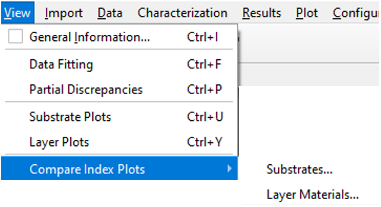

View Menu
View Menu
Navigation: OptiChar Menu Commands > View Menu |
` <trasform_function.htm>`__ ` <idh_optilayer.htm>`__ ` <idh_g eneral_information_window.htm>`__ |
The View menu provides access to various options that allow you to gather / general information/ about the state of OptiChar and analyze the characterization results.
 |
General Information - Opens the / / / General Information window/ / / . You can also use the hotkey Ctrl+I to access this window.
Window List… - Displays information about all open OptiChar windows and allows you to activate any previously opened window (refer to / / / OptiChar Window List/ / / ). This feature is also accessible via the hotkey Alt+0.
Data Fitting - Opens the / / / Data Fitting/ / / window, which displays the fitting of the loaded measurement data (represented as crosses) against the corresponding theoretical characteristics.
Partial Discrepancies - Opens the / / / Partial Discrepancies/ / / window, which displays the discrepancies between the loaded measurement data and the corresponding theoretical characteristics.
Total Losses - Opens the Total / / / Losses window/ / / . The currently loaded measurement file must include reflectance and transmittance data for a common wavelength region and the same angle of incidence.
Color… - Opens the / / / Color Evaluation/ / / window, which represents the color properties of the current film.
Substrate Parameters - Opens the / / / Current Substrate/ / / window, displaying information about the substrate’s refractive index and extinction coefficient.
Layer Parameters - Opens the / / / Current Layer/ / / window, which displays optical parameters of the film obtained during / / / Layer Characterization/ / / .
Substrate Plots - Opens the / / / Substrate Plots/ / / window, which graphically displays the substrate’s refractive index and extinction coefficient.
Layer Plots - Opens the / / / Layer Plots/ / / window, which displays the refractive index, extinction coefficient, inhomogeneity factor, and refractive index profile of the characterized film.
Integrated Extinction - Opens the / / / Integrated Extinction Coefficient/ / / window. This option is available only if the reflectance and transmittance data are loaded simultaneously for the same wavelength region, polarization, and angle of incidence.
Compare Index Plots - Opens a dialog that allows for the / / / comparison of refractive indices/ / / of different layer materials.
Collection - Opens the / / / Collection/ / / window, displaying data stored in the OptiChar / / / Collection/ / / .